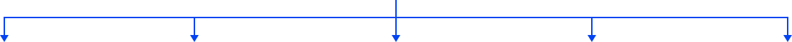

A fraqueza muscular é causada pelo processo neurodegenerativo da doença. Pode levar à imobilidade no leito.

Dor
Isso poderá causar aumento da rigidez articular e aumento da predisposição à
dor.
Hipertrofia muscular
Contratura muscular
Deformidades
A redução da força muscular, por sua vez resulta na redução do trofismo muscular,
contraturas musculares e
deformidades.
Hipertrofia muscular
Hipoventilação
Além disso, diminui a capacidade vital agravada pela
redução da ventilação pulmonar e da tolerância à atividade física.
fadiga
A redução do condicionamento físico também acontece nas pessoas com ELA, causando uma
elevação da fadiga.
Osteoporose
Fraturas
A diminuição da tensão sobre tendões e ligamentos
aumentará a predisposição à osteoporose, levando a um
maior risco a fraturas.
Imobilidade
Piora de QUALIDADE DE VIDA
A soma de todos estes fatores leva a um ciclo, que predispõe à permanência prolongada no leito (o aumento do
imobilismo), e consequentemente, uma pior qualidade de vida.